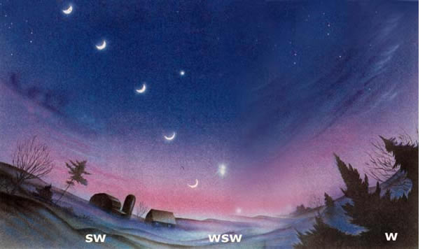

SEASONS OF EARTH AND SKY
How to watch the winter patterns of the moon 8 planets .
The crescent moon from top to bottom: Feb. 21, Feb. 20, Feb. 19, Feb. 18, Feb. 17. The planets at dusk, Feb. 23,after sunset: Saturn top center, then Venus,Jupiter and Mercury. On Feb. 18, Venus and Jupiter will be farther apart but lie not far to the lower right of the moon, with Jupiterhigher than Venus.
This February won't provide us with a full moon, though the sky will compensate us in March with the rare (and long-fabled) "blue moon."
The time between one full moon and the next averages (with very slight variation) about 29-1/2 days. So there can never be two truly full moons in February not even in leap year, when February is still a half day too short. our longer months, on the other hand, can have two full moon s in fact, this happens once every few years. When it does, the second full moon of the month is called a "blue moon." However, I suspect that this definition of a blue moon came into being in recent years or decades. The very much older phrase "once in a blue moon" probably originated with an event much more rare than a two full-moon month: initially, it probably referred to those rare instances when the moon literally looks blue.
What causes the moon and sometimes the sun to look blue (or green or bronze) is a pall containing particles of just the right size to preferentially scatter the blue wavelength of moonlight or sunlight. Such a cloud may be produced by widespread forest fres or by vast volcanic eruptions. The only really widespread and striking case of blue moon (and sun) in the U.S. during this century was the one in September 1950, which was visible across New York, New England, and part of the Mid-Atlantic states. It was caused by Canadian forest fires.
If you want rare, however, the pattern of a two-full-moons-January, no-full-moon February, and two-full-moons March is pretty rare. Instances of it can never occur less than 19 years apart, but it doesn't always occur that often. This year's instance is only the fourth of the 20th century, and the last time it happened was in 1961. It won't happen again until 19 years from now, in 2018.
Actually, I do need to qualify the above statements. They are the correct years if you figure the exact times of full moons in the astronomers' worldwide time system, universal or Greenwich time. This year's episode of two fulls, no full, two fulls happens in both universal time and in American time zones. But that is not always true. Nevertheless, whatever time zone you calculate these events for, they average about one per generation.
The two full moons of March will look more or less like any other full moons. But in the west, at dusk, during this February and March, there are sights not just of great intellectual interest but also of great visual beauty. There is one of the finest arrangements of moon and planets in years and what is arguably the closest really visible conjunction (meeting) of the two brightest planets in decades.
February begins with the two most brilliant planets, Venus and Jupiter, still about 22° apart. When we talk about degrees in the sky, we mean fractions of the 180° of the half circle or dome that we perceive the sky to be. Thus, from horizon to overhead-halfway across the sky-is half of 180°, which is 90°. You can measure these "angular distances" in the sky by using your hand: your fist held out at full arm's length is, from your viewpoint, about 10° wide.
Venus and Jupiter may start the month over 20° (two fist widths at arm's length) apart, but the gap between them closes rapidly. Each night, they are about a degree closer together, the brighter and lower of the two, Venus, appearing notably higher and Jupiter notably lower. Thus, at nightfall on February 17, they are only 6° apart when a lovely crescent moon shows up about 5.2° below Venus. The night after this line of Jupiter-Venus moon, we see the moon leap up to the upper left of Jupiter: the three great lights now form a triangle, with Venus and Jupiter 5° apart, Jupiter and the moon 4° apart, and the moon and Venus about 8f° apart. The additions of Saturn far to the upper left and Mercury to the lower right make this scene even lovelier.
Each night thereafter, the moon moves higher and farther left (east). But Jupiter and Venus keep getting closer together. Each night, they are beautiful, but if your sky is clear on February 23, you will see the two 0.15° apart-almost close enough for their rays to be touching.
In the final days of February and first of March, Venus keeps getting higher, Jupiter lower, and Jupiter pulls fairly near a new planet below and to the right of it, Mercury. (Check the almanac, page 78, for details about some particular nights). On March 8, four of the five bright planets are within 27f° of each other in the west at dusk (though Mercury has just about faded from view). In the next two weeks, Venus nears Saturn and has a fairly lovely conjunction with it. But there are two more planets you should hear about for February and March.
One planet is Mars. It rises in the late evening in February, a little earlier in March. Mars will be unmistakable because it will be brightening each week and its color (golden-orange) becomes increasingly noticeable.
There is one more planet to mention the dimmest of them all. That planet is Pluto, and for the past 20 years, schoolchildren have had to learn that formerly farthest Pluto was actually now slightly closer to the sun than Neptune. Well, this 20-year period ends on February 10, 1999. Pluto will once again be farther from the sun than Neptune or any other now-known planet of our solar system ...for about the next 230 years!
Maybe no American cold wave has been more shiver-inducing than the one that occurred 100 years ago this February. When it entered the lower 48 on February 11, it dropped temperatures to as low as - 61°F in Montana. By the next morning, the Arctic blast had rushed over the eastern plains and Texas, bringing a low of -22°F to Kansas City and -8°F to El Paso!
Twelve different states recorded their lowest temperatures ever for any date in this cold wave (some of the records set still stand). The third morning, February 13, brought the coldest weather ever recorded along the Gulf Coast and parts of Florida: 6.8°F at New Orleans, -1°F at Mobile, 7°F at Pensacola, and the all-time Florida low of -2°F at Tallahassee. On the morning of February 12, 1899, Washington, D.C., saw a low of -15°F. But the great problem for the East was the blizzard that was about to hit in the wake of the cold wave. The "Great Eastern Blizzard of '99" dumped 34 inches of snow on Washington, D.C.--20.5 inches of those on Valentine's Day. It also left buried beneath 41 inches of snow the Victorian town of Cape in May, located at the southern-most tip of New Jersey-setting a snow-depth record that remains an all-time high for the Garden State.
Today we are familiar with the undulatory nature of the jet stream's position and how its dips are typically just wide enough to bring extremely frigid winter weather to most of the U.S., while the rest of the country basks in unusual warmth. The existence of the jet stream was not even suspected back in 1899. Today, we can nod knowingly when we hear that on February 18, 1899, the mercury in San Francisco soared to 80°F.
You know a cold wave is powerful when its icy touch reaches the southernmost United States. Perhaps even more astonishing is when snow falls and gathers in these parts of the country. Note especially the storm that America's greatest weather historian, the late David M. Ludlum, called "probably the greatest deep-snow anomaly in the recorded climate history of the United States." It occurred on February 14 and 15, 1895, and dropped amounts the likes of which have yet to be seen again in our southeastern states. Places in southwestern Louisiana got up to 24 inches of snow; Galveston had 15 inches, New Orleans, eight. It even snowed at the very mouth of the Mississippi River.
Jupiter's most recognizable characteristic is its "Great Red Spot," a massive (twice the diameter of the earth) anticyclonic storm system that has persisted in the atmosphere for over 100 years. Winds at the outer edges of the storm reach 250 mph, while the center is very nearly calm. The storm is massive enough to spawn temporary white oval storms, which are 2000 miles or more in diameter and rage for approximately 40 years. Despite close passes by the Voyager and Galileo spacecraft, scientists have no idea how the storm formed or why it refuses to resolve itself.
The lowest temperature ever recorded was -128.6°F on July 21,1983, in Vostok, Antarctica. The lowest average annual temperature is in Plateau Station, Antarctica ...a balmy-70°F .
|
 |
|
|